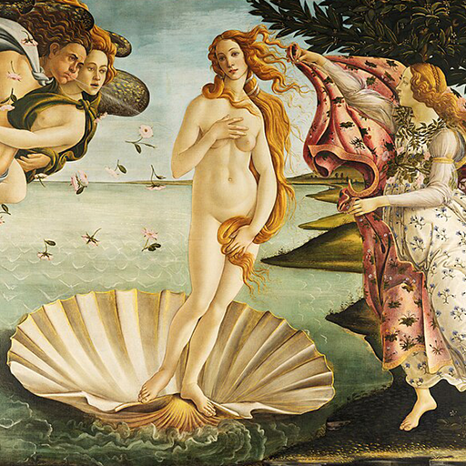

Hexagram 42 – Yi_increase: Growing Benefit
Upper: Wind (☴) · Lower: Thunder (☳)

Core Meaning
This is a period of growth: resources, opportunities, and support are increasing. Use the momentum rather than merely collecting more. Grow, share what you can, and let benefits circulate.
“I welcome growth and let resources flow where they can do good.”
Blessing
May goodwill keep moving through your life, and may what you give return in meaningful ways.
Guidance by Life Area
Love
The relationship is gaining strength and both sides are willing to give more. Offer care openly and receive it without guilt so the connection can grow.
Give openly and receive openly:
- Use this positive phase well.
- Let care move both ways.
Career
Resources, opportunities, or helpful people may appear. Use them to grow your skills and support the team rather than keeping every advantage to yourself.
Use opportunities to build skill and capacity:
- Share what you know.
- Let growth benefit the team.
Health
This is a good time to improve your health. Start the changes you already know you need and let steady progress build on itself.
Start the change while momentum is strong:
- Build on small wins.
- Keep the routine sustainable.
Finances
Finances may be improving through income, returns, or new resources. Strengthen your foundation first, then expand with discipline.
Strengthen your financial base:
- Put part of the gain toward long-term goals.
- Keep risk controls in place.
Relationships
Support and useful connections are increasing. Accept help graciously and share what you can so goodwill keeps circulating.
Accept support and share what you can:
- Keep goodwill moving.
- Build mutual relationships.